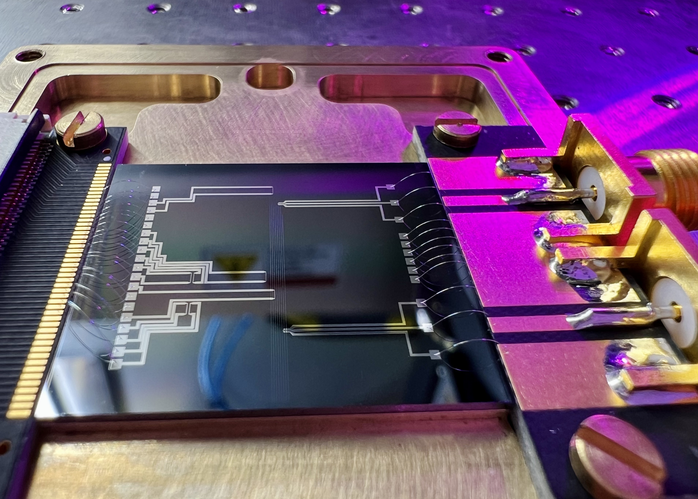

03
Photonic Chip: Komputasi Cahaya Kilat
Nggak pakai kabel tembaga lagi, datanya dikirim lewat laser cahaya. Bergerak secepat kilat dan adem di suhu kamar normal!

INTEGRATED OPTICAL MODULATOR
Modulator Elektro-Optik Terintegrasi
Chip silikon mungil yang nembakin laser inframerah buat transfer data super cepat antar-prosesor tanpa bikin panas.
KENAPA FOTONIK NGEBUT?
300.000 km/detik (Bebas Lemot)
Ngebut tanpa hambatan fisik yang biasanya bikin kabel tembaga lemot.
Adem di Suhu Ruangan (25°C)
Nggak butuh kulkas khusus, bisa langsung dipasang di rak server biasa.
WDM (Jalur Multi-Warna)
Ratusan berkas laser meluncur barengan dalam satu jalur pandu gelombang.
Bikin konsumsi listrik pendingin server AI hemat sampai 90%.